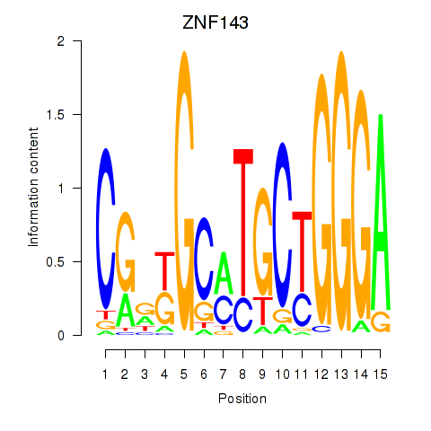

Motif ID: ZNF143
Z-value: 0.598
Transcription factors associated with ZNF143:
| Gene Symbol | Entrez ID | Gene Name |
|---|---|---|
| ZNF143 | ENSG00000166478.5 | ZNF143 |
![](http://string-db.org/api/image/network?network_flavor=evidence&limit=0&species=9606&caller_identity=MARA&identifiers=9606.ENSP00000448012%0D9606.ENSP00000248566%0D9606.ENSP00000246229%0D9606.ENSP00000369317%0D9606.ENSP00000345477%0D9606.ENSP00000240123%0D9606.ENSP00000260662%0D9606.ENSP00000448220%0D9606.ENSP00000311677%0D9606.ENSP00000216190%0D9606.ENSP00000359035%0D9606.ENSP00000280358%0D9606.ENSP00000194530%0D9606.ENSP00000262640%0D9606.ENSP00000368797%0D9606.ENSP00000368799%0D9606.ENSP00000364902%0D9606.ENSP00000325748%0D9606.ENSP00000334319%0D9606.ENSP00000391723%0D9606.ENSP00000342019%0D9606.ENSP00000346067%0D9606.ENSP00000295902%0D9606.ENSP00000334800%0D9606.ENSP00000271526%0D9606.ENSP00000293872%0D9606.ENSP00000407724%0D9606.ENSP00000390011%0D9606.ENSP00000345656%0D9606.ENSP00000359095%0D9606.ENSP00000223136%0D9606.ENSP00000288221%0D9606.ENSP00000451866%0D9606.ENSP00000367770%0D9606.ENSP00000309457%0D9606.ENSP00000252242%0D9606.ENSP00000318687%0D9606.ENSP00000284811%0D9606.ENSP00000265094%0D9606.ENSP00000264169%0D9606.ENSP00000370200%0D9606.ENSP00000220913%0D9606.ENSP00000362690%0D9606.ENSP00000200135%0D9606.ENSP00000462730%0D9606.ENSP00000369666%0D9606.ENSP00000417470%0D9606.ENSP00000222330%0D9606.ENSP00000253144%0D9606.ENSP00000222005%0D9606.ENSP00000310120%0D9606.ENSP00000327821%0D9606.ENSP00000435777%0D9606.ENSP00000263274%0D9606.ENSP00000457868%0D9606.ENSP00000355060%0D9606.ENSP00000279873%0D9606.ENSP00000419397%0D9606.ENSP00000432845%0D9606.ENSP00000278483%0D9606.ENSP00000338572%0D9606.ENSP00000358565%0D9606.ENSP00000324205%0D9606.ENSP00000357986%0D9606.ENSP00000304467%0D9606.ENSP00000367727%0D9606.ENSP00000258962%0D9606.ENSP00000331363%0D9606.ENSP00000375844%0D9606.ENSP00000290913%0D9606.ENSP00000386049%0D9606.ENSP00000358470%0D9606.ENSP00000217402%0D9606.ENSP00000216639%0D9606.ENSP00000356541%0D9606.ENSP00000328875%0D9606.ENSP00000273261%0D9606.ENSP00000351284%0D9606.ENSP00000307674%0D9606.ENSP00000366522%0D9606.ENSP00000356155%0D9606.ENSP00000301327%0D9606.ENSP00000263256%0D9606.ENSP00000366604%0D9606.ENSP00000381045%0D9606.ENSP00000362115%0D9606.ENSP00000302886%0D9606.ENSP00000322419%0D9606.ENSP00000354125%0D9606.ENSP00000386181%0D9606.ENSP00000263209%0D9606.ENSP00000266483%0D9606.ENSP00000306528%0D9606.ENSP00000253861%0D9606.ENSP00000222270%0D9606.ENSP00000372122%0D9606.ENSP00000259512%0D9606.ENSP00000238714%0D9606.ENSP00000308717%0D9606.ENSP00000005558%0D9606.ENSP00000361066)
{kind=link}
{kind=link}
{kind=link}
{kind=link}
{kind=link}
Top targets:
Gene overrepresentation in biological_process category:
| Log-likelihood per target | Total log-likelihood | Term | Description |
|---|---|---|---|
| 0.2 | 0.5 | GO:0098972 | dendritic transport of mitochondrion(GO:0098939) anterograde dendritic transport of mitochondrion(GO:0098972) |
| 0.1 | 1.9 | GO:0036481 | intrinsic apoptotic signaling pathway in response to hydrogen peroxide(GO:0036481) |
| 0.1 | 0.4 | GO:0034970 | histone H3-R2 methylation(GO:0034970) |
| 0.1 | 0.4 | GO:1903461 | Okazaki fragment processing involved in mitotic DNA replication(GO:1903461) |
| 0.1 | 0.7 | GO:0035624 | receptor transactivation(GO:0035624) |
| 0.1 | 0.3 | GO:0007518 | myoblast fate determination(GO:0007518) |
| 0.1 | 0.2 | GO:1903595 | positive regulation of histamine secretion by mast cell(GO:1903595) |
| 0.1 | 0.3 | GO:1902990 | mitotic telomere maintenance via semi-conservative replication(GO:1902990) |
| 0.1 | 0.3 | GO:0001732 | formation of cytoplasmic translation initiation complex(GO:0001732) |
| 0.1 | 0.3 | GO:1904578 | response to thapsigargin(GO:1904578) cellular response to thapsigargin(GO:1904579) |
| 0.1 | 0.3 | GO:0051708 | intracellular transport of viral protein in host cell(GO:0019060) symbiont intracellular protein transport in host(GO:0030581) intracellular protein transport in other organism involved in symbiotic interaction(GO:0051708) |
| 0.1 | 0.2 | GO:0006258 | UDP-glucose catabolic process(GO:0006258) positive regulation of adrenergic receptor signaling pathway(GO:0071879) |
| 0.1 | 0.3 | GO:0034227 | tRNA thio-modification(GO:0034227) |
| 0.0 | 0.3 | GO:0075525 | viral translational termination-reinitiation(GO:0075525) |
| 0.0 | 0.2 | GO:0015783 | GDP-fucose transport(GO:0015783) UDP-N-acetylglucosamine transport(GO:0015788) purine nucleotide-sugar transport(GO:0036079) UDP-N-acetylglucosamine transmembrane transport(GO:1990569) |
| 0.0 | 0.3 | GO:2000819 | regulation of nucleotide-excision repair(GO:2000819) |
| 0.0 | 0.3 | GO:0090611 | ubiquitin-independent protein catabolic process via the multivesicular body sorting pathway(GO:0090611) |
| 0.0 | 0.2 | GO:1900042 | positive regulation of interleukin-2 secretion(GO:1900042) |
| 0.0 | 0.3 | GO:0090166 | Golgi disassembly(GO:0090166) |
| 0.0 | 0.2 | GO:0070966 | nuclear-transcribed mRNA catabolic process, no-go decay(GO:0070966) |
| 0.0 | 0.1 | GO:0006566 | threonine metabolic process(GO:0006566) |
| 0.0 | 0.1 | GO:0043137 | DNA replication, removal of RNA primer(GO:0043137) |
| 0.0 | 0.5 | GO:1990416 | cellular response to brain-derived neurotrophic factor stimulus(GO:1990416) |
| 0.0 | 0.2 | GO:2000676 | positive regulation of type B pancreatic cell apoptotic process(GO:2000676) |
| 0.0 | 0.2 | GO:0090285 | negative regulation of protein glycosylation in Golgi(GO:0090285) |
| 0.0 | 0.1 | GO:0035621 | ER to Golgi ceramide transport(GO:0035621) |
| 0.0 | 0.1 | GO:0000711 | meiotic DNA repair synthesis(GO:0000711) |
| 0.0 | 0.1 | GO:0042144 | vacuole fusion, non-autophagic(GO:0042144) |
| 0.0 | 0.1 | GO:0032618 | interleukin-15 production(GO:0032618) |
| 0.0 | 0.1 | GO:0051029 | rRNA transport(GO:0051029) |
| 0.0 | 0.2 | GO:0034421 | post-translational protein acetylation(GO:0034421) |
| 0.0 | 0.1 | GO:0044878 | mitotic cytokinesis checkpoint(GO:0044878) |
| 0.0 | 0.1 | GO:0000454 | snoRNA guided rRNA pseudouridine synthesis(GO:0000454) |
| 0.0 | 0.1 | GO:1990180 | mitochondrial tRNA 3'-end processing(GO:1990180) |
| 0.0 | 0.1 | GO:0042351 | 'de novo' GDP-L-fucose biosynthetic process(GO:0042351) |
| 0.0 | 0.2 | GO:2000259 | positive regulation of complement activation(GO:0045917) positive regulation of protein activation cascade(GO:2000259) |
| 0.0 | 0.1 | GO:0044828 | negative regulation by host of viral genome replication(GO:0044828) |
| 0.0 | 0.1 | GO:0060399 | positive regulation of growth hormone receptor signaling pathway(GO:0060399) |
| 0.0 | 0.1 | GO:0014886 | transition between slow and fast fiber(GO:0014886) |
| 0.0 | 0.1 | GO:0038188 | cholecystokinin signaling pathway(GO:0038188) |
| 0.0 | 0.2 | GO:0000389 | mRNA 3'-splice site recognition(GO:0000389) |
| 0.0 | 0.2 | GO:2000580 | positive regulation of microtubule motor activity(GO:2000576) regulation of ATP-dependent microtubule motor activity, plus-end-directed(GO:2000580) positive regulation of ATP-dependent microtubule motor activity, plus-end-directed(GO:2000582) |
| 0.0 | 0.1 | GO:0044208 | 'de novo' AMP biosynthetic process(GO:0044208) |
| 0.0 | 0.3 | GO:0030916 | otic vesicle formation(GO:0030916) |
| 0.0 | 0.1 | GO:0006423 | cysteinyl-tRNA aminoacylation(GO:0006423) |
| 0.0 | 0.1 | GO:0018343 | protein farnesylation(GO:0018343) |
| 0.0 | 0.1 | GO:0032483 | regulation of Rab protein signal transduction(GO:0032483) |
| 0.0 | 0.1 | GO:0010949 | negative regulation of intestinal phytosterol absorption(GO:0010949) negative regulation of intestinal cholesterol absorption(GO:0045796) intestinal phytosterol absorption(GO:0060752) negative regulation of intestinal lipid absorption(GO:1904730) |
| 0.0 | 0.2 | GO:0036066 | protein O-linked fucosylation(GO:0036066) |
| 0.0 | 0.2 | GO:0034501 | protein localization to kinetochore(GO:0034501) |
| 0.0 | 0.1 | GO:0043504 | mitochondrial DNA repair(GO:0043504) |
| 0.0 | 0.1 | GO:2000312 | regulation of kainate selective glutamate receptor activity(GO:2000312) |
| 0.0 | 0.1 | GO:0016321 | female meiosis chromosome segregation(GO:0016321) |
| 0.0 | 0.1 | GO:0000395 | mRNA 5'-splice site recognition(GO:0000395) |
| 0.0 | 0.1 | GO:0060355 | positive regulation of cell adhesion molecule production(GO:0060355) |
| 0.0 | 0.1 | GO:0015781 | nucleotide-sugar transport(GO:0015780) pyrimidine nucleotide-sugar transport(GO:0015781) |
| 0.0 | 0.0 | GO:1990619 | histone H3-K9 deacetylation(GO:1990619) |
| 0.0 | 0.1 | GO:0010606 | positive regulation of cytoplasmic mRNA processing body assembly(GO:0010606) |
| 0.0 | 0.2 | GO:0071763 | nuclear membrane organization(GO:0071763) |
| 0.0 | 0.1 | GO:0061470 | T follicular helper cell differentiation(GO:0061470) |
| 0.0 | 0.1 | GO:0046440 | L-lysine catabolic process to acetyl-CoA(GO:0019474) L-lysine catabolic process(GO:0019477) L-lysine metabolic process(GO:0046440) |
| 0.0 | 0.1 | GO:0000379 | tRNA-type intron splice site recognition and cleavage(GO:0000379) |
| 0.0 | 0.2 | GO:0007000 | nucleolus organization(GO:0007000) |
| 0.0 | 0.3 | GO:0045717 | negative regulation of fatty acid biosynthetic process(GO:0045717) |
| 0.0 | 0.2 | GO:0036155 | acylglycerol acyl-chain remodeling(GO:0036155) |
| 0.0 | 0.1 | GO:0044211 | CTP salvage(GO:0044211) |
| 0.0 | 0.1 | GO:1900246 | positive regulation of RIG-I signaling pathway(GO:1900246) |
| 0.0 | 0.3 | GO:0031053 | primary miRNA processing(GO:0031053) |
| 0.0 | 0.2 | GO:0001682 | tRNA 5'-leader removal(GO:0001682) |
| 0.0 | 0.1 | GO:0039019 | pronephric nephron development(GO:0039019) |
| 0.0 | 0.1 | GO:0030997 | regulation of centriole-centriole cohesion(GO:0030997) |
| 0.0 | 0.0 | GO:1903517 | regulation of telomere maintenance via recombination(GO:0032207) negative regulation of telomere maintenance via recombination(GO:0032208) negative regulation of single strand break repair(GO:1903517) negative regulation of beta-galactosidase activity(GO:1903770) telomere single strand break repair(GO:1903823) negative regulation of telomere single strand break repair(GO:1903824) |
| 0.0 | 0.1 | GO:0031291 | Ran protein signal transduction(GO:0031291) |
| 0.0 | 0.2 | GO:0034378 | chylomicron assembly(GO:0034378) |
| 0.0 | 0.1 | GO:0051496 | positive regulation of stress fiber assembly(GO:0051496) |
| 0.0 | 0.2 | GO:0033327 | Leydig cell differentiation(GO:0033327) |
Gene overrepresentation in cellular_component category:
| Log-likelihood per target | Total log-likelihood | Term | Description |
|---|---|---|---|
| 0.1 | 0.3 | GO:1903095 | microprocessor complex(GO:0070877) ribonuclease III complex(GO:1903095) |
| 0.1 | 0.3 | GO:0036502 | Derlin-1-VIMP complex(GO:0036502) |
| 0.1 | 0.2 | GO:0034455 | t-UTP complex(GO:0034455) |
| 0.1 | 0.2 | GO:1990423 | RZZ complex(GO:1990423) |
| 0.1 | 0.2 | GO:0008623 | CHRAC(GO:0008623) |
| 0.0 | 0.5 | GO:0071541 | eukaryotic translation initiation factor 3 complex, eIF3m(GO:0071541) |
| 0.0 | 0.2 | GO:0016938 | kinesin I complex(GO:0016938) |
| 0.0 | 0.1 | GO:0010369 | chromocenter(GO:0010369) |
| 0.0 | 0.2 | GO:0005726 | perichromatin fibrils(GO:0005726) |
| 0.0 | 0.1 | GO:0033597 | mitotic checkpoint complex(GO:0033597) bub1-bub3 complex(GO:1990298) |
| 0.0 | 0.1 | GO:0005965 | protein farnesyltransferase complex(GO:0005965) |
| 0.0 | 0.2 | GO:0045272 | plasma membrane respiratory chain complex I(GO:0045272) |
| 0.0 | 0.2 | GO:0005638 | lamin filament(GO:0005638) |
| 0.0 | 0.2 | GO:0061617 | MICOS complex(GO:0061617) |
| 0.0 | 0.1 | GO:0070685 | macropinocytic cup(GO:0070685) |
| 0.0 | 0.2 | GO:0005797 | Golgi medial cisterna(GO:0005797) |
| 0.0 | 0.2 | GO:0070545 | PeBoW complex(GO:0070545) |
| 0.0 | 0.3 | GO:0005664 | origin recognition complex(GO:0000808) nuclear origin of replication recognition complex(GO:0005664) |
| 0.0 | 0.1 | GO:0000818 | nuclear MIS12/MIND complex(GO:0000818) |
| 0.0 | 0.1 | GO:0045283 | mitochondrial respiratory chain complex II, succinate dehydrogenase complex (ubiquinone)(GO:0005749) succinate dehydrogenase complex (ubiquinone)(GO:0045257) respiratory chain complex II(GO:0045273) succinate dehydrogenase complex(GO:0045281) fumarate reductase complex(GO:0045283) |
| 0.0 | 0.1 | GO:1902636 | kinociliary basal body(GO:1902636) |
| 0.0 | 0.4 | GO:0005686 | U2 snRNP(GO:0005686) |
| 0.0 | 0.1 | GO:0030905 | retromer, tubulation complex(GO:0030905) |
| 0.0 | 0.2 | GO:0005655 | nucleolar ribonuclease P complex(GO:0005655) |
| 0.0 | 0.1 | GO:0000942 | condensed nuclear chromosome outer kinetochore(GO:0000942) |
| 0.0 | 0.5 | GO:0071682 | endocytic vesicle lumen(GO:0071682) |
| 0.0 | 0.2 | GO:0000801 | central element(GO:0000801) |
| 0.0 | 0.1 | GO:1990745 | EARP complex(GO:1990745) |
| 0.0 | 0.2 | GO:0070937 | CRD-mediated mRNA stability complex(GO:0070937) |
| 0.0 | 0.3 | GO:0000815 | ESCRT III complex(GO:0000815) |
| 0.0 | 0.3 | GO:0036038 | MKS complex(GO:0036038) |
| 0.0 | 0.1 | GO:0008622 | epsilon DNA polymerase complex(GO:0008622) |
| 0.0 | 0.6 | GO:0032839 | dendrite cytoplasm(GO:0032839) |
| 0.0 | 0.4 | GO:0030992 | intraciliary transport particle B(GO:0030992) |
| 0.0 | 0.3 | GO:0008250 | oligosaccharyltransferase complex(GO:0008250) |
| 0.0 | 0.1 | GO:0000137 | Golgi cis cisterna(GO:0000137) |
| 0.0 | 0.2 | GO:0030015 | CCR4-NOT core complex(GO:0030015) |
| 0.0 | 0.3 | GO:0097539 | ciliary transition fiber(GO:0097539) |
| 0.0 | 0.1 | GO:0042765 | GPI-anchor transamidase complex(GO:0042765) |
| 0.0 | 0.1 | GO:0033263 | CORVET complex(GO:0033263) |
| 0.0 | 0.1 | GO:1990604 | IRE1-TRAF2-ASK1 complex(GO:1990604) |
| 0.0 | 0.1 | GO:0032584 | growth cone membrane(GO:0032584) |
| 0.0 | 0.1 | GO:0072589 | box H/ACA scaRNP complex(GO:0072589) box H/ACA telomerase RNP complex(GO:0090661) |
| 0.0 | 0.1 | GO:0098560 | cytoplasmic side of late endosome membrane(GO:0098560) |
| 0.0 | 0.1 | GO:0030016 | myofibril(GO:0030016) |
Gene overrepresentation in molecular_function category:
| Log-likelihood per target | Total log-likelihood | Term | Description |
|---|---|---|---|
| 0.1 | 0.4 | GO:0035241 | protein-arginine omega-N monomethyltransferase activity(GO:0035241) |
| 0.1 | 0.3 | GO:0098808 | mRNA cap binding(GO:0098808) |
| 0.1 | 0.5 | GO:1990932 | 5.8S rRNA binding(GO:1990932) |
| 0.1 | 0.2 | GO:0031493 | nucleosomal histone binding(GO:0031493) |
| 0.1 | 0.3 | GO:0004382 | guanosine-diphosphatase activity(GO:0004382) |
| 0.1 | 1.4 | GO:0008349 | MAP kinase kinase kinase kinase activity(GO:0008349) |
| 0.1 | 0.2 | GO:0001226 | RNA polymerase II transcription corepressor binding(GO:0001226) |
| 0.0 | 0.3 | GO:0004525 | ribonuclease III activity(GO:0004525) double-stranded RNA-specific ribonuclease activity(GO:0032296) |
| 0.0 | 0.2 | GO:0045131 | pre-mRNA branch point binding(GO:0045131) |
| 0.0 | 0.3 | GO:0050733 | RS domain binding(GO:0050733) |
| 0.0 | 0.1 | GO:0005055 | laminin receptor activity(GO:0005055) |
| 0.0 | 0.2 | GO:0005457 | GDP-fucose transmembrane transporter activity(GO:0005457) UDP-N-acetylglucosamine transmembrane transporter activity(GO:0005462) purine nucleotide-sugar transmembrane transporter activity(GO:0036080) |
| 0.0 | 0.1 | GO:0033149 | FFAT motif binding(GO:0033149) |
| 0.0 | 0.5 | GO:0000774 | adenyl-nucleotide exchange factor activity(GO:0000774) |
| 0.0 | 0.2 | GO:0050252 | retinol O-fatty-acyltransferase activity(GO:0050252) |
| 0.0 | 0.1 | GO:0004019 | adenylosuccinate synthase activity(GO:0004019) |
| 0.0 | 0.1 | GO:0050577 | GDP-4-dehydro-D-rhamnose reductase activity(GO:0042356) GDP-L-fucose synthase activity(GO:0050577) |
| 0.0 | 0.1 | GO:0033867 | Fas-activated serine/threonine kinase activity(GO:0033867) |
| 0.0 | 0.2 | GO:0031871 | proteinase activated receptor binding(GO:0031871) |
| 0.0 | 0.4 | GO:0003910 | DNA ligase (ATP) activity(GO:0003910) |
| 0.0 | 0.2 | GO:0004594 | pantothenate kinase activity(GO:0004594) |
| 0.0 | 0.1 | GO:0004660 | protein farnesyltransferase activity(GO:0004660) |
| 0.0 | 0.1 | GO:0051538 | succinate dehydrogenase (ubiquinone) activity(GO:0008177) 3 iron, 4 sulfur cluster binding(GO:0051538) |
| 0.0 | 0.1 | GO:0004951 | cholecystokinin receptor activity(GO:0004951) |
| 0.0 | 0.1 | GO:0031811 | G-protein coupled nucleotide receptor binding(GO:0031811) P2Y1 nucleotide receptor binding(GO:0031812) |
| 0.0 | 0.2 | GO:0004468 | lysine N-acetyltransferase activity, acting on acetyl phosphate as donor(GO:0004468) |
| 0.0 | 0.1 | GO:0016453 | C-acetyltransferase activity(GO:0016453) |
| 0.0 | 0.1 | GO:1990460 | leptin receptor binding(GO:1990460) |
| 0.0 | 0.1 | GO:0004817 | cysteine-tRNA ligase activity(GO:0004817) |
| 0.0 | 0.2 | GO:0004305 | ethanolamine kinase activity(GO:0004305) |
| 0.0 | 0.7 | GO:0016922 | ligand-dependent nuclear receptor binding(GO:0016922) |
| 0.0 | 0.1 | GO:0061676 | importin-alpha family protein binding(GO:0061676) |
| 0.0 | 0.1 | GO:0008309 | double-stranded DNA exodeoxyribonuclease activity(GO:0008309) linoleoyl-CoA desaturase activity(GO:0016213) 5'-flap endonuclease activity(GO:0017108) |
| 0.0 | 0.1 | GO:0016647 | oxidoreductase activity, acting on the CH-NH group of donors, oxygen as acceptor(GO:0016647) |
| 0.0 | 0.0 | GO:0010861 | thyroid hormone receptor activator activity(GO:0010861) thyroid hormone receptor coactivator activity(GO:0030375) |
| 0.0 | 0.2 | GO:0019237 | centromeric DNA binding(GO:0019237) |
| 0.0 | 0.1 | GO:0097001 | ceramide binding(GO:0097001) |
| 0.0 | 0.1 | GO:0004583 | dolichyl-phosphate-glucose-glycolipid alpha-glucosyltransferase activity(GO:0004583) |
| 0.0 | 0.1 | GO:0015165 | nucleotide-sugar transmembrane transporter activity(GO:0005338) pyrimidine nucleotide-sugar transmembrane transporter activity(GO:0015165) |
| 0.0 | 0.5 | GO:0050811 | GABA receptor binding(GO:0050811) |
| 0.0 | 0.1 | GO:0005483 | soluble NSF attachment protein activity(GO:0005483) |
| 0.0 | 0.1 | GO:0001888 | glucuronyl-galactosyl-proteoglycan 4-alpha-N-acetylglucosaminyltransferase activity(GO:0001888) |
| 0.0 | 0.2 | GO:0008417 | fucosyltransferase activity(GO:0008417) |
| 0.0 | 0.3 | GO:0003688 | DNA replication origin binding(GO:0003688) |
| 0.0 | 0.1 | GO:0098626 | methylselenol reductase activity(GO:0098625) methylseleninic acid reductase activity(GO:0098626) |
| 0.0 | 0.0 | GO:0072545 | tyrosine binding(GO:0072545) |
| 0.0 | 0.1 | GO:0030620 | U2 snRNA binding(GO:0030620) |
| 0.0 | 0.1 | GO:0035005 | lipid kinase activity(GO:0001727) 1-phosphatidylinositol-4-phosphate 3-kinase activity(GO:0035005) |
| 0.0 | 0.1 | GO:0004045 | aminoacyl-tRNA hydrolase activity(GO:0004045) |
| 0.0 | 0.1 | GO:0003923 | GPI-anchor transamidase activity(GO:0003923) |
| 0.0 | 0.2 | GO:0043996 | histone acetyltransferase activity (H4-K5 specific)(GO:0043995) histone acetyltransferase activity (H4-K8 specific)(GO:0043996) histone acetyltransferase activity (H4-K16 specific)(GO:0046972) |
| 0.0 | 0.0 | GO:0000386 | second spliceosomal transesterification activity(GO:0000386) |
| 0.0 | 0.1 | GO:0033829 | O-fucosylpeptide 3-beta-N-acetylglucosaminyltransferase activity(GO:0033829) |
| 0.0 | 0.1 | GO:0010997 | anaphase-promoting complex binding(GO:0010997) |
| 0.0 | 0.2 | GO:0052658 | inositol-1,4,5-trisphosphate 5-phosphatase activity(GO:0052658) |
| 0.0 | 0.1 | GO:0004466 | long-chain-acyl-CoA dehydrogenase activity(GO:0004466) |
Gene overrepresentation in C2:CP category:
| Log-likelihood per target | Total log-likelihood | Term | Description |
|---|---|---|---|
| 0.0 | 0.7 | PID_ERB_GENOMIC_PATHWAY | Validated nuclear estrogen receptor beta network |
Gene overrepresentation in C2:CP:REACTOME category:
| Log-likelihood per target | Total log-likelihood | Term | Description |
|---|---|---|---|
| 0.0 | 0.7 | REACTOME_CIRCADIAN_REPRESSION_OF_EXPRESSION_BY_REV_ERBA | Genes involved in Circadian Repression of Expression by REV-ERBA |
| 0.0 | 0.5 | REACTOME_EARLY_PHASE_OF_HIV_LIFE_CYCLE | Genes involved in Early Phase of HIV Life Cycle |
| 0.0 | 0.3 | REACTOME_CDC6_ASSOCIATION_WITH_THE_ORC_ORIGIN_COMPLEX | Genes involved in CDC6 association with the ORC:origin complex |
| 0.0 | 0.9 | REACTOME_FORMATION_OF_THE_TERNARY_COMPLEX_AND_SUBSEQUENTLY_THE_43S_COMPLEX | Genes involved in Formation of the ternary complex, and subsequently, the 43S complex |